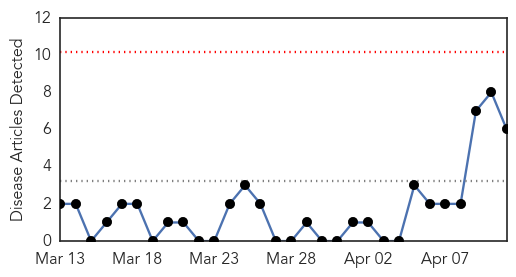
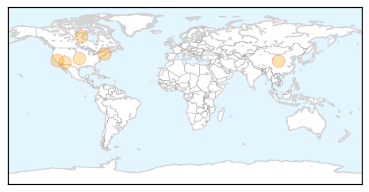

Swine Flu
30-Day Web Trend
0 alerts, 0 warnings

30-Day Twitter Trend
4 alerts, 0 warnings

Article Locations
Article Confidences

Top Articles:
- 0.999
- A brief, terrifying history of viruses escaping from labs: 70s Chinese pandemic was a lab mistake
- 0.988
- Sea otters can ‘get the flu’
- 0.976
- No evidence that anti-viral drugs for flu prevent serious complications or deaths
- 0.928
- Peru’s Ministry of Health issues alert for avian flu
- 0.905
- Is stockpiling Tamiflu a waste of government money?
- 0.900
- Is stockpiling Tamiflu a waste of money? Some believe drug wastes millions of dollars
Top Tweets:
-
No tweets found for Apr 11, 2014